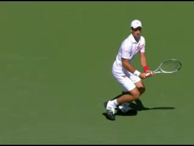
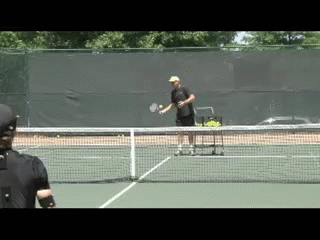
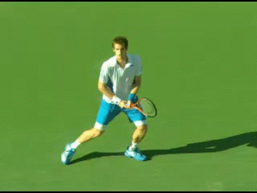
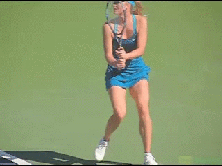
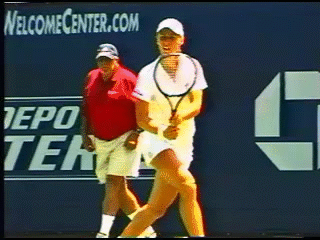
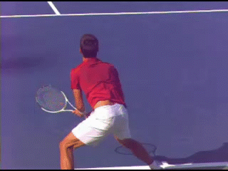
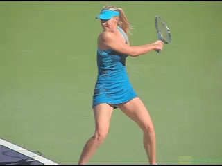
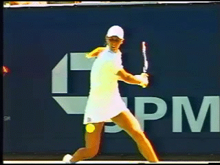
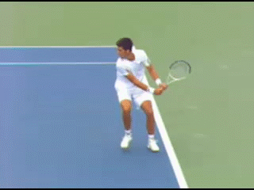

The ATP Two Handed Backhand:¶
The 3 General Types
Dr. Brian Gordon
In my previous forehand articles for Tennisplayer, I presented a new approach to understanding a forehand model similar to what you see on the ATP tour (Click Here). Now in this new series, let's turn to the two-handed backhand and see what I consider to be the optimal ATP two-handed model, a model I believe is applicable for players at all levels.
In this article, I'll start by explaining the research and the teaching experience that underlies the development of the model. Next I'll outline the three different variations of the two-hander in the current game, variations that I see as steps or progression toward the optimal swing. In the following articles we will look at the components of the ideal swing in detail.

Novak: the optimum two-handed backhand type.
Background
My system is based on years of quantitative biomechanical research, research that is also combined with extensive on court work with elite players and coaches. I call this approach "Biomechanically Engineered Stroke Technique", or the BEST system for short.
Development of the BEST system has been a true collaboration with Rick Macci. Together Rick and I have worked to develop and implement it, primarily with sectional and nationally ranked juniors, but also with some pro players at various levels.

10 cameras, 400 frames per second--quantitative 3D measurements.
The system creates optimal models from the perspective of the neuromuscular-skeletal system. Rick's contribution has been to use his unparalleled experience as a developmental coach to transform this information in to on court teaching progressions. Implementing it also includes the regular assessment of player's development using quantitative 3D analysis
The data we have used comes from scientific measurement and analysis systems that make 3D biomechanical measurements. Currently at the Macci Academy in Boca Raton we use a scientific grade infrared system manufactured with 10 cameras filming at 400 frames per second.
The cameras read reflective spheres attached to the player's body and racket and are accurate to within one tenth of a millimeter. Based on that information and using proprietary software I've developed, I do computations to determine where the skeleton is and from there calculate the biomechanics. This includes joint angles, velocities, accelerations, and other mechanical parameters.
But the ultimate goal of this research is not just to understand what is happening scientifically. The larger goal has been to define optimal technique and then assess how players are moving toward it.

Our model looks very much like the two-handed players hit on the men's tour.
As it turns out, the two-handed model developed from our research looks very much like the two-handed backhands of the best players in the world. Since I have not measured players like Novak Djokovic, however, I can't scientifically demonstrate that they are using these exact techniques. However, studying the high speed video on Tennisplayer, I believe it is a reasonable assumption that they are biomechanically very similar to our models.
Three Types
When we look across the entire range of pro and elite junior tennis, it is evident that not all players--or even a majority--are following our models. Looking at the game broadly, we have identified three broad classifications, or three two-handed backhand types.
You can look at them as discrete backhands, or as I prefer, steps on a path towards an optimal swing model. So let's go through and look at the 3 Types and the differences, starting with the backswings.
The first backhand style I call Type 1. This type has a full loop backswing that has significant lateral or sideways movement with the racket going back behind the player's body.
Our Type 2 backhand also has a full loop but the looping motion is primarily backward with a minimal lateral or sideways component, usually not breaking into what I call the lateral plane.
The third backhand I call Type 3. This backhand has what I call a half loop. The half loop sets the racket back fully at the unit turn. It is the most compact, but also the most powerful and efficient as we shall see. This is the basis for our teaching model, and the backswing most prevalent on the ATP tour.
Type 1

Sharapova's Type 1 backhand with a lateral loop going back behind her body.
Maria Sharapova is a great pro example of a Type 1 backhand and her backhand type is also widespread in the juniors. She slows the racket down or even pauses at the completion of the unit turn.
From there she loops the racket down and around well behind her back. The left elbow is pulled well behind the body. There is a reason for that. This sideways or lateral movement breaks the lateral plane of her body and this is a defining Type 1 element.
Looking at the video you can see how far her racket goes behind her torso. Notice also how it is angled toward the sideline at something like a 30 degree angle.
Type 2

Elena Dementieva, a backward loop that stays on the hitting side of her body.
The Type 2 backhand is a refinement of the Type 1. Elena Dementieva is a good example. Dementieva has a full loop as well, like Sharapova. But the path is different.
But rather than going back laterally behind the body, her loop moves backwards. It usually doesn't break into the lateral plane.
Look at the difference in the tip of the racket. Unlike Maria, her racket tip is pointing far more directly backwards, rather than at the sideline.
You can also see that her left elbow is not nearly as far behind the body. Essentially the racket stays on the hitting side of the body.
This positioning is a more advanced element. It's very important and what we consider a key part of the optimal approach.
Type 3
Now let's compare than to the Type 3 backhand. Let's use Novak Djokovic as an example. There is a big difference here compared to Sharapova or Dementieva. Compared to either of the full loop variations, the racket is actually pulled all the way back at the completion of the unit turn. It's essentially a straight back swing with a half loop.

The racket head on the Type 3 backhand--above and slightly outside the hands.
From this position there is no additional backswing motion. The racket has gone directly backward and slightly upward. But it has not moved behind the body like Sharapova, or looped as far backwards as Dementieva. The loop is much more compact and the left elbow is further away from the torso than in the Type 2.
But the most important thing is the position of the racket relative to the hand. This is similar to what we saw in our analysis of the optimal forehand (Click Here) The racquet head is above the hands. It is also to the outside of the hands, though less to the outside than is typical on the forehand.
This is critical because it is going to set Novak up to use a much shorter forward swing. It minimizes the range of motion and simplifies the timing issues. At the same time, it increases the synchronized motion of the arms with the trunk. It also allows him to use the critical muscles in the forward swing more explosively.
Forward Swing

Sharapova's forward swing with the elbows bent and tight to the body.
Now let's look at the differences in the three types in the forward swing. How do the different backswings affect what happens next?
With the Type 1 two hander and the full lateral loop, Sharapova hits the ball with her elbows and especially her top elbow, bent and tight to the body. The left arm, the upper arm is essentially parallel to her spine.
This is a disadvantage because the arms have less independent motion, a negative factor in the concurrent maximization of both vertical and horizontal racket head speed. The arms are driven principally by the torso swinging around, what I call a unit swing. And again, this is something you see a lot in junior tennis.
In the Type 2 backhand with the more backward loop, you can see Elena Dementieva has moved the left arm through the swing to a much greater extent than Sharapova. What does this add?
It integrates independent arm motion into the forward swing. It makes her two hander what we call a multi-segment swing and facilitates more straightening of her top arm. As opposed to a unit swing, essentially driven by the torso, her backhand with has substantial pull through with the arms. Again this is an advance toward optimal technique.

Dementieva moves the left arm through the swing more than Sharapova.
But now let's take that to the next level in the Type 3 swing. The Type 3 is also a multi-segment swing. But in the Type 3, even compared to the Type 2, there is a significantly greater amount of independent left arm motion from the shoulder joint.
This has a direct impact on the contact position which tends to be significantly further in front compared to either the Type 1 or Type 2. This is due to the drive from the back left arm and shoulder.
One key to understanding this is to watch the left or top arm. Note the straighter position of the top arm approaching contact. It has extended outward from the shoulder and tends to be consistently straighter than the Type 2 position.
The straight top arm and independent motion of that arm are critical to both neuromuscular optimization and mechanical optimization, something we explain in more detail in the next two articles.
Summarizing

Djokovic a straighter top arm with more movement and earlier contact.
These are broad classifications. And of course there are variations within these styles. So again are the key differences?
Progressing from the Type 1 swing to the Type 3 swing, there is decreased lateral motion in the backswing. There is decreased overall range of motion in the swing.
This is a shorter swing and we can confirm this is true by measuring the exact lengths. That means there is a decrease in time required to move from the unit turn to the contact. It's a quick hitting type of stroke.
Furthermore there is added use of the arms in two ways: synchronized arm motion and independent arm motion from the shoulder joints. In the next article we will look closely at this and also see an additional critical factor, what we call increased neuromuscular optimization.
But a question. If the Type 3 swing is clearly optimal, why do so many players, especially younger players, use the much larger lateral backswings associated with Type 1. Can we really build Type 3 backhands from the ground up? And if so how? Stay tuned for the answers.

Dr. Brian Gordon has changed the understanding of the biomechanics of high level tennis technique. His Biomechanically Engineered Stroke Technique (BEST) is the only empirically based stroke mechanics system in the world, growing from three decades of both academic and applied on court research. He is a founder of the Tennis Center for Performance Research in Miami, Florida, which is creating a new paradigm for player development. The center has assembled an unprecedented group of specialists with cutting edge knowledge across the entire range of tennis performance.
To visit his website, Click Here!
Top contact him directly, Click Here!